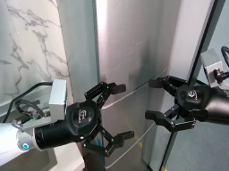
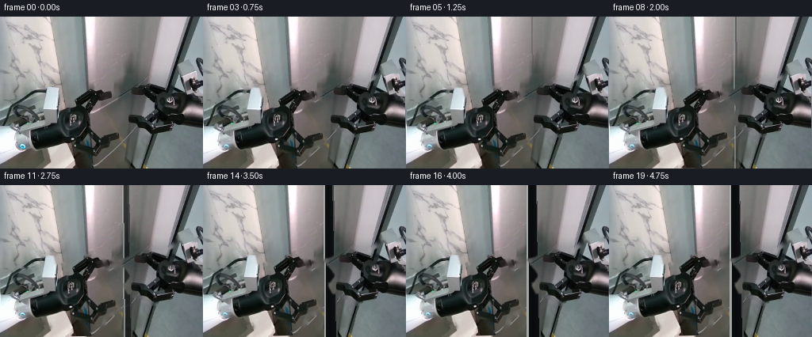
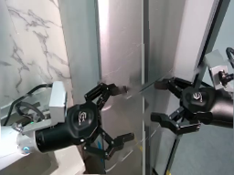
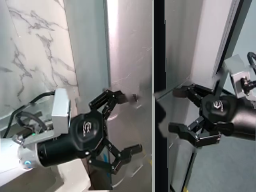
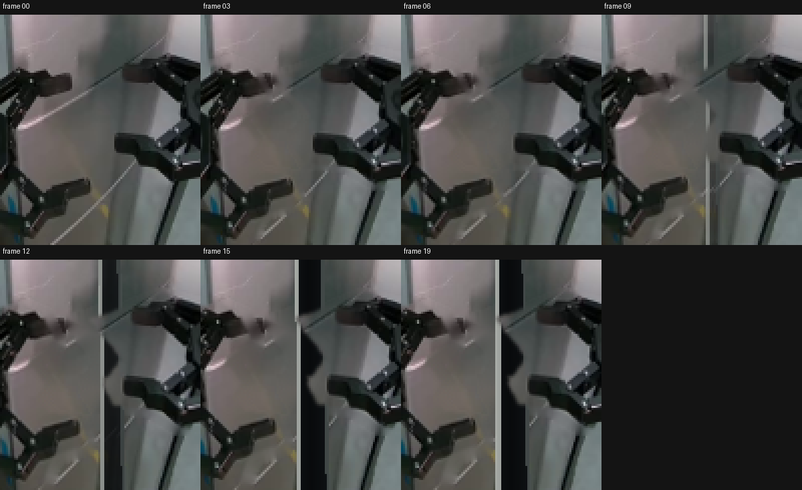
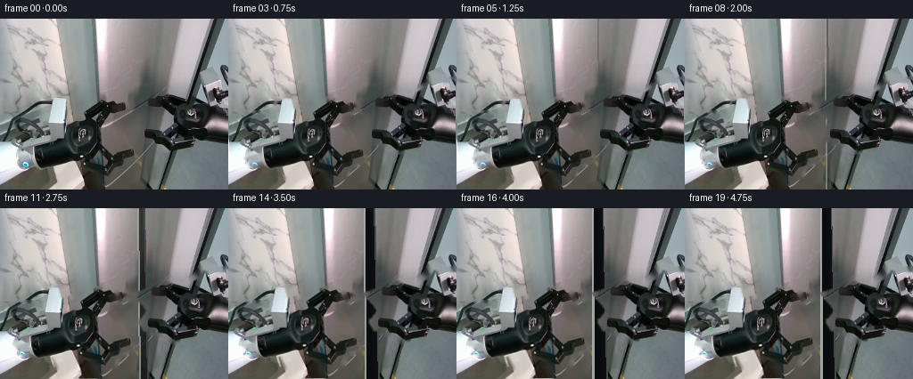

CODING AGENTS AS PIXEL WORLD MODELS
traex/GPT-5.6-Sol · common50_0008
点击播放 · 原生 RGB 像素
逐轮保存的候选
回放视频、检查图与代码变化。
每份候选均可单独播放。实际图片检查记录在下方工具轨迹中。
候选 01播放与检查图
点击播放 · 原生 RGB 像素

展开代码变化
--- 上一保存版本 +++ 本次保存版本 @@ -0,0 +1,258 @@ +"""Generate a short, deterministic two-arm door-prying sequence. + +The source photograph is treated as a set of shallow, image-space layers. The +door leaves are foreshortened about their outside edges while the two robot +assemblies articulate about off-screen/base-side pivots. This keeps all source +appearance (including the rather complicated grippers) and avoids inventing a +new robot from primitives. +""" + +from pathlib import Path + +import cv2 +import numpy as np + +import artifact_io + + +ROOT = Path(__file__).resolve().parent +W, H = 256, 192 + + +def smoothstep(x): + x = np.clip(x, 0.0, 1.0) + return x * x * (3.0 - 2.0 * x) + + +def polygon_mask(polygons, blur=0.0): + m = np.zeros((H, W), np.uint8) + for poly in polygons: + cv2.fillPoly(m, [np.asarray(poly, np.int32)], 255) + if blur: + k = int(blur * 4 + 1) | 1 + m = cv2.GaussianBlur(m, (k, k), blur) + return m + + +def combine_masks(*masks): + out = np.zeros((H, W), np.uint8) + for m in masks: + out = np.maximum(out, m) + return out + + +def affine_about(anchor, sx=1.0, sy=1.0, angle=0.0, dx=0.0, dy=0.0): + """An affine matrix applying anisotropic scale/rotation about anchor.""" + ax, ay = anchor + a = np.deg2rad(angle) + c, s = np.cos(a), np.sin(a) + A = np.array([[sx * c, -sx * s], [sy * s, sy * c]], np.float32) + center = np.array([ax, ay], np.float32) + t = center - A @ center + np.array([dx, dy], np.float32) + return np.column_stack([A, t]).astype(np.float32) + + +def warp_layer(image, mask, matrix, interpolation=cv2.INTER_CUBIC): + layer = cv2.warpAffine( + image, matrix, (W, H), flags=interpolation, + borderMode=cv2.BORDER_REFLECT_101, + ) + alpha = cv2.warpAffine( + mask, matrix, (W, H), flags=cv2.INTER_LINEAR, + borderMode=cv2.BORDER_CONSTANT, + ).astype(np.float32) / 255.0 + return layer, alpha[..., None] + + +def composite(dst, src, alpha): + return dst * (1.0 - alpha) + src.astype(np.float32) * alpha + + +def build_masks(im): + # Visible door faces. Their slightly converging outlines follow the real + # perspective in frame zero. + left_door = polygon_mask([ + [(106, 0), (159, 0), (159, 84), (161, 192), (105, 192)], + ], 0.65) + right_door = polygon_mask([ + [(158, 0), (239, 0), (222, 50), (204, 91), (185, 192), (159, 192)], + ], 0.65) + + # Robot silhouettes are the union of conservative component polygons and + # dark, connected mechanical detail inside their working envelopes. + left_env = polygon_mask([ + [(0, 113), (22, 105), (53, 109), (75, 101), (93, 96), + (111, 90), (130, 93), (137, 106), (124, 115), (120, 128), + (134, 143), (151, 145), (153, 158), (135, 164), (124, 192), + (74, 192), (61, 174), (35, 162), (0, 167)], + ]) + right_env = polygon_mask([ + [(144, 96), (164, 89), (182, 82), (200, 86), (217, 80), + (224, 70), (256, 68), (256, 159), (229, 158), (212, 147), + (194, 149), (178, 140), (157, 138), (151, 128), (161, 115)], + ]) + + gray = cv2.cvtColor(im, cv2.COLOR_RGB2GRAY) + # Dark metal/rubber forms most of the manipulators. Dilation captures + # bright rim highlights while preserving holes between fingers. + dark = ((gray < 112).astype(np.uint8) * 255) + dark = cv2.dilate(dark, np.ones((5, 5), np.uint8), iterations=1) + left_detail = cv2.bitwise_and(dark, left_env) + right_detail = cv2.bitwise_and(dark, right_env) + + # Explicit light-metal pieces: left horizontal wrist, white controller, + # and the right wrist/terminal hardware. + left_solids = polygon_mask([ + [(0, 127), (22, 118), (56, 112), (84, 115), (85, 140), + (55, 143), (22, 154), (0, 156)], + [(54, 90), (69, 89), (76, 118), (61, 128), (52, 118)], + [(80, 105), (107, 96), (124, 103), (121, 134), (104, 151), + (84, 142), (74, 126)], + [(105, 97), (119, 88), (130, 92), (130, 105), (119, 111)], + [(108, 125), (126, 121), (132, 128), (125, 138)], + [(118, 141), (148, 145), (151, 156), (126, 161)], + ]) + right_solids = polygon_mask([ + [(218, 83), (235, 72), (256, 72), (256, 145), (236, 151), + (215, 142), (201, 128), (203, 102)], + [(181, 92), (204, 87), (220, 98), (219, 131), (205, 145), + (184, 140), (171, 125)], + [(160, 91), (181, 84), (193, 89), (188, 102), (168, 108)], + [(145, 95), (164, 91), (177, 99), (165, 106)], + [(151, 125), (177, 122), (184, 132), (163, 138)], + ]) + left_robot = combine_masks(left_detail, left_solids) + right_robot = combine_masks(right_detail, right_solids) + + # A soft edge is important only at the final compositing stage. The hard + # versions below are retained for clean background reconstruction. + left_soft = cv2.GaussianBlur(left_robot, (5, 5), 0.8) + right_soft = cv2.GaussianBlur(right_robot, (5, 5), 0.8) + return left_door, right_door, left_robot, right_robot, left_soft, right_soft + + +def make_clean_plate(im, left_robot, right_robot): + # Only narrow newly exposed strips will be visible, so classical inpainting + # gives a convincing continuation of the steel/marble behind each arm. + erase = combine_masks(left_robot, right_robot) + erase = cv2.dilate(erase, np.ones((7, 7), np.uint8), iterations=1) + bgr = cv2.cvtColor(im, cv2.COLOR_RGB2BGR) + clean = cv2.inpaint(bgr, erase, 5, cv2.INPAINT_TELEA) + return cv2.cvtColor(clean, cv2.COLOR_BGR2RGB) + + +def draw_gap(frame, p): + """Paint the widening dark cavity and both illuminated door lips.""" + if p <= 0: + return frame + out = frame.copy() + # Seam edges follow the source perspective; lower opening is fractionally + # wider because it is closer to the camera. + lx0, lx1 = 158.2 - 6.2 * p, 160.5 - 8.0 * p + rx0, rx1 = 158.7 + 5.8 * p, 160.8 + 8.5 * p + yy, xx = np.mgrid[0:H, 0:W] + left = lx0 + (lx1 - lx0) * yy / (H - 1) + right = rx0 + (rx1 - rx0) * yy / (H - 1) + cavity = (xx >= left) & (xx <= right) + # A non-flat recess, deepest just right of center. + u = np.clip((xx - left) / np.maximum(right - left, 1.0), 0, 1) + depth = (12 + 14 * np.abs(u - 0.43))[..., None] + cool = np.concatenate([depth * 0.72, depth * 0.87, depth], axis=2) + a = (cavity.astype(np.float32) * smoothstep(p))[..., None] + out = out * (1 - a) + cool * a + + # Thin steel lips make the geometry legible and remain attached to leaves. + overlay = out.astype(np.uint8).copy() + lpts = np.array([[round(lx0), 0], [round(lx0 + 1), 0], + [round(lx1 + 1), H - 1], [round(lx1), H - 1]], np.int32) + rpts = np.array([[round(rx0 - 1), 0], [round(rx0), 0], + [round(rx1), H - 1], [round(rx1 - 1), H - 1]], np.int32) + cv2.fillPoly(overlay, [lpts], (177, 181, 176)) + cv2.fillPoly(overlay, [rpts], (72, 79, 78)) + lip_a = (0.35 + 0.55 * p) + return out * (1 - lip_a) + overlay.astype(np.float32) * lip_a + + +def generate_frames(): + source = cv2.cvtColor(cv2.imread(str(ROOT / "first_frame.png")), cv2.COLOR_BGR2RGB) + assert source.shape == (H, W, 3) + masks = build_masks(source) + left_door, right_door, left_hard, right_hard, left_soft, right_soft = masks + clean = make_clean_plate(source, left_hard, right_hard) + frames = [] + + for i in range(20): + if i == 0: + frames.append(source.copy()) + continue + + # Contact during the first second, then a deliberate two-handed pull. + contact = smoothstep(i / 4.0) + pry = smoothstep((i - 4.0) / 12.0) + # Tiny damped settle while holding force at the end. + settle = 0.0 + if i >= 16: + settle = np.sin((i - 16) * np.pi * 0.72) * np.exp(-(i - 16) * 0.65) + q = np.clip(pry + 0.018 * settle, 0.0, 1.0) + + frame = clean.astype(np.float32) + + # Foreshorten both leaves about their outer/hinge-side boundaries. At + # contact they flex imperceptibly; the visible opening starts only with + # the opposing pull. + ml = affine_about((106, 96), sx=1.0 - 0.120 * q, + sy=1.0, angle=-0.10 * q) + mr = affine_about((205, 96), sx=1.0 - 0.125 * q, + sy=1.0, angle=0.08 * q) + ldoor, la = warp_layer(clean, left_door, ml) + rdoor, ra = warp_layer(clean, right_door, mr) + # Gentle lighting shift as each metallic face turns relative to camera. + ldoor = np.clip(ldoor.astype(np.float32) + 3.0 * q, 0, 255) + rdoor = np.clip(rdoor.astype(np.float32) - 6.0 * q, 0, 255) + frame = composite(frame, ldoor, la) + frame = composite(frame, rdoor, ra) + frame = draw_gap(frame, q) + + # Initially both tips advance ~1 px to seat at the seam. During pry, + # opposite anchored scales/rotations take them 7-9 px apart while the + # remote arm bases remain almost motionless. + advance = contact * (1.0 - pry) + left_m = affine_about( + (8, 145), sx=1.0 - 0.056 * q, sy=1.0, + angle=-1.05 * q, dx=1.15 * advance, + dy=0.35 * advance + 0.45 * settle, + ) + right_m = affine_about( + (254, 119), sx=1.0 - 0.070 * q, sy=1.0, + angle=0.95 * q, dx=-1.15 * advance, + dy=0.30 * advance - 0.35 * settle, + ) + lrobot, lalpha = warp_layer(source, left_soft, left_m) + rrobot, ralpha = warp_layer(source, right_soft, right_m) + + # Contact shadow travels with each end effector but stays behind metal. + shadow = np.zeros((H, W), np.uint8) + cv2.ellipse(shadow, (int(132 - 5.8*q), int(111 + 0.3*advance)), + (6, 13), -18, 0, 360, 72, -1) + cv2.ellipse(shadow, (int(165 + 6.5*q), int(119 + 0.3*advance)), + (6, 14), 16, 0, 360, 66, -1) + shadow = cv2.GaussianBlur(shadow, (9, 9), 3).astype(np.float32) / 255.0 + frame *= (1.0 - shadow[..., None] * (0.20 * contact)) + + frame = composite(frame, lrobot, lalpha) + frame = composite(frame, rrobot, ralpha) + + # Very mild force-induced exposure change, local to the steel cavity. + # No camera shake: the workspace itself stays registered throughout. + frame = np.clip(frame, 0, 255).astype(np.uint8) + frames.append(frame) + + result = np.stack(frames).astype(np.uint8) + # Contract-critical identity check. + assert np.array_equal(result[0], source) + return result + + +if __name__ == "__main__": + artifact_io.save(generate_frames(), ROOT) +
候选 02播放与检查图
点击播放 · 原生 RGB 像素

展开代码变化
--- 上一保存版本
+++ 本次保存版本
@@ -189,11 +189,9 @@
# Contact during the first second, then a deliberate two-handed pull.
contact = smoothstep(i / 4.0)
pry = smoothstep((i - 4.0) / 12.0)
- # Tiny damped settle while holding force at the end.
- settle = 0.0
- if i >= 16:
- settle = np.sin((i - 16) * np.pi * 0.72) * np.exp(-(i - 16) * 0.65)
- q = np.clip(pry + 0.018 * settle, 0.0, 1.0)
+ # The final second is a genuinely stable force hold: no camera or
+ # mechanism jitter once full opening is reached.
+ q = pry
frame = clean.astype(np.float32)
@@ -214,18 +212,19 @@
frame = draw_gap(frame, q)
# Initially both tips advance ~1 px to seat at the seam. During pry,
- # opposite anchored scales/rotations take them 7-9 px apart while the
- # remote arm bases remain almost motionless.
+ # opposite rigid translations/rotations take them 7-9 px apart. There
+ # is deliberately no anisotropic scale here: the robot hardware keeps
+ # its shape instead of rubber-sheet deforming.
advance = contact * (1.0 - pry)
left_m = affine_about(
- (8, 145), sx=1.0 - 0.056 * q, sy=1.0,
- angle=-1.05 * q, dx=1.15 * advance,
- dy=0.35 * advance + 0.45 * settle,
+ (8, 145), sx=1.0, sy=1.0,
+ angle=-0.42 * q, dx=1.15 * advance - 6.8 * q,
+ dy=0.35 * advance,
)
right_m = affine_about(
- (254, 119), sx=1.0 - 0.070 * q, sy=1.0,
- angle=0.95 * q, dx=-1.15 * advance,
- dy=0.30 * advance - 0.35 * settle,
+ (254, 119), sx=1.0, sy=1.0,
+ angle=0.42 * q, dx=-1.15 * advance + 6.8 * q,
+ dy=0.30 * advance,
)
lrobot, lalpha = warp_layer(source, left_soft, left_m)
rrobot, ralpha = warp_layer(source, right_soft, right_m)
候选 03播放与检查图

可观测工具轨迹
实际执行的命令与返回图片。
命令 1exit 0
/bin/bash -lc "cat prompt.txt && printf '\\n--- GENERATION_RULES ---\\n' && cat GENERATION_RULES.md"
命令 2exit 1
/bin/bash -lc "find . -maxdepth 2 -type f -printf '%p\\n' | sort && printf '\\n--- tools ---\\n' && command -v ffmpeg && command -v python3"
命令 3exit 0
/bin/bash -lc "python3 - <<'PY'
from PIL import Image
im=Image.open('first_frame.png')
print(im.mode, im.size)
PY"命令 4exit 0
/bin/bash -lc "cat task_spec.json && printf '\\n--- artifact_io.py ---\\n' && sed -n '1,260p' artifact_io.py"
命令 5exit 0
/bin/bash -lc "python3 - <<'PY' mods=['PIL','numpy','cv2','imageio'] for m in mods: try: x=__import__(m); print(m,'OK',getattr(x,'__version__','')) except Exception as e: print(m,'NO',e) PY"
命令 6exit 0
/bin/bash -lc "python3 generate.py && python3 - <<'PY'
import json, numpy as np
from PIL import Image
f=np.stack([np.asarray(Image.open(f'frames/{i:02d}.png').convert('RGB')) for i in range(20)])
s=np.asarray(Image.open('first_frame.png').convert('RGB'))
print('shape/dtype',f.shape,f.dtype)
print('frame00 exact',np.array_equal(f[0],s),'maxerr',np.abs(f[0].astype(int)-s.astype(int)).max())
for i in range(1,20):
d=np.abs(f[i].astype(np.int16)-f[i-1].astype(np.int16))
print(f'{i:02d}: mean_delta={d.mean():.3f}, changed={(d.max(2)>2).mean():.3f}, max={d.max()}')
PY"命令 7exit 0
/bin/bash -lc "python3 - <<'PY'
from PIL import Image,ImageDraw
import numpy as np
ims=[Image.open(f'frames/{i:02d}.png').crop((105,65,205,180)).resize((300,345),Image.Resampling.NEAREST) for i in [0,3,6,9,12,15,19]]
out=Image.new('RGB',(4*300,2*(345+22)),(20,20,20));d=ImageDraw.Draw(out)
for j,(idx,im) in enumerate(zip([0,3,6,9,12,15,19],ims)):
x=(j%4)*300;y=(j//4)*(345+22);d.text((x+4,y+3),f'frame {idx:02d}',fill='white');out.paste(im,(x,y+22))
out.save('.tmp/contact_sheet.png')
PY"命令 8exit 0
/bin/bash -lc "python3 generate.py && python3 - <<'PY'
import numpy as np
from PIL import Image
f=np.stack([np.asarray(Image.open(f'frames/{i:02d}.png')) for i in range(20)])
s=np.asarray(Image.open('first_frame.png'))
print('contract', f.shape, f.dtype, 'frame00_exact=',np.array_equal(f[0],s))
print('late pair mean/max deltas:')
for i in range(15,20):
d=np.abs(f[i].astype(int)-f[i-1].astype(int)); print(i,round(d.mean(),4),d.max(),np.count_nonzero(d))
z=np.load('pixels.npz')['pixels']; print('npz tensor',z.shape,z.dtype)
PY"命令 9exit 0
/bin/bash -lc "python3 -m py_compile generate.py && test -f pixels.npz && test -f index.html && test -f frames/19.png && python3 - <<'PY'
from pathlib import Path
import hashlib
from PIL import Image
import numpy as np
src=np.asarray(Image.open('first_frame.png').convert('RGB'))
out=np.asarray(Image.open('frames/00.png').convert('RGB'))
assert np.array_equal(src,out)
assert len(list(Path('frames').glob('*.png')))==20
assert all(Image.open(p).size==(256,192) and Image.open(p).mode=='RGB' for p in Path('frames').glob('*.png'))
print('validation: PASS')
print('pixels.npz:',Path('pixels.npz').stat().st_size,'bytes')
print('sha256:',hashlib.sha256(Path('pixels.npz').read_bytes()).hexdigest())
PY"视觉工具实际返回图片 1

视觉工具实际返回图片 2

视觉工具实际返回图片 3

视觉工具实际返回图片 4

视觉工具实际返回图片 5

视觉工具实际返回图片 6

保存候选 3 份；完成命令 9 次；可验证图片返回 6 张。原始 API 响应与完整日志保留在本地。